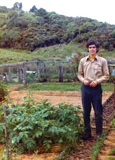
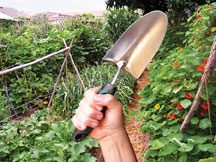

An Amazing And Prolific Urban Homestead
How our family of four has created food and energy self-sufficiency on a fifth of acre.
By Jules Dervaes
February/March 2009
Looking back at 1965, the year I entered college, I hardly recognize myself! At 18 I was headed - like everyone I knew - for life in the professional world. My dad was providing for our family by working for Chevron as a district manager of central Florida. For me, class valedictorian at Tampa’s Jesuit High School, the die had been cast to make my living by wearing a white collar. Working at manual labor was never a possibility, never even imagined.
Getting married in 1970 brought new responsibilities and a sense of urgency regarding the need to consider the long-term future - for years I felt inadequate in handling all of life’s daily requirements, let alone emergencies. I admired people who were able to build or fix things and longed to be as rugged as those who started from scratch by settling new lands.
Intoxicated with the changes of the ’60s and ’70s, some of my generation found peace in the back-to-the-land movement. Others went further, making an exodus from the nation. The convergence of these happenings signaled that it was time; I knew I had to go away. I wanted to live as simply as possible, in harmony with nature, in touch with my basic needs for food, water and shelter. In the aftermath of the Vietnam War, I was looking for “old world” stability and a place where family values were still unchanged.
It was 1973 when my wife and I immigrated to a land less traveled. New Zealand was to become for me a new birthplace. I arrived there ready to begin living off the land, taking with me a briefcase packed with the first 13 issues of Mother Earth News magazine.
The isolated ruggedness of an abandoned gold town (population one, the addition of my wife and me tripling it to three) became the setting of a daily struggle to learn to live a new way. Embarrassed, I felt like a child, having to go through - at 26 - the ordeals of growing up. But, I soon learned about vegetable gardening, raising farm animals, drinking iron-oxide rainwater, cooking on a woodstove and using a bucket toilet - among other backwoods scholarship - and ultimately, this “funny” American successfully homesteaded.
By taking one small step after another, I overcame the paralysis of my city-boy-lost-in-the-woods state of mind. In a sweet stroke of fortune, a kind old-timer passed along his beekeeping know-how and handmade equipment to me. Running a one-man bush-honey operation was a lowly genesis; but it was the first time that I had ever felt productive with my hands. I was loving it!
Homesteading In the City
The next 15 years saw a whirlwind of changes: a return to Florida following the birth of our first child, to be closer to our extended families; living on 10 acres; a new business of lawn maintenance; the rearing of home-schooled children; a move to Pasadena, Calif.; the purchase of a fixer-upper house; the loss of a job; a divorce. Because my plans had failed, I was yearning to go “home” to the land again.
While I was dreaming of moving back to the country somewhere, reality intervened. In the early ’90s, Southern California experienced a drought so severe that water rates were increased for higher usage. Not wanting to pay extra for the green illusion that was my front lawn, I smothered it with a six-inch layer of mulch. The water-guzzling grass was replaced with wildflowers and herbs and - as I got smarter - with edible, Dervaes-style landscaping. This drastic step, driven by frugality, became a major factor in turning my ordinary home into an extraordinary homestead.
Then, in the fall of 2000, I reacted angrily upon hearing that U.S. biotech corporations were bent on introducing GMOs into the food supply. Believing I had to do whatever it took to protect my family from this mad experiment, I determined to get food security the old-fashioned way - by growing my own food. My three young-adult children, Anaïs, Justin and Jordanne, all enlisted in the challenge. My yard, as I saw it, had now become our Alamo. Resolving to plant my way to independence, I had the anger and the stubbornness. However, there was one thing I thought I did not have: the land.
How much food could be grown on a lot 66-feet-by-132-feet? That was one-fifth of an acre. Was it possible to farm in the middle of Pasadena? Excluding the space required for our residence, cultivatable “acreage” was about one-tenth of an acre. Could that sliver of land produce enough for my family to eat well? The plan of setting up an urban homestead meant living the farm life without the farm land. At the start, I could not help but think this was crazy; but I knew we could do something - plant, plant and plant some more.
It came as a complete shock when the harvest tally for the first year of gardening for a livelihood was 2,300 pounds. Yet, I knew we could do more; for we had only scratched the surface of our anemic, worm-challenged soil. On a budget, I looked for cheap ways to enrich the beige-colored dirt, getting free straw, tree trimmings and horse manure. In time, our pet “composters” (chickens, ducks, rabbits and goats) kicked in, turning our waste greens into instant fertilizer - well, almost. With the completion of this natural cycle, our homestead was officially off and running.
Urban Sustainability
My gardening methods - an eclectic mix developed over decades - stemmed from my father’s old-fashioned practice of letting nature have its way. He was a caretaker, nurturing his yard to create a lush, semi-tropical jungle, without any pesticide, herbicide or commercial fertilizer. His scheme was to never discard any organic matter whatsoever. What I learned from my dad was that there was no such thing as “yard waste.” Before I ever heard the term, I automatically knew composting was integral to the growing cycle.
One basic practice used in the slow transformation from sterile property to fertile oasis was experimentation. I couldn’t find the answers I was looking for in books or on the Web. This project was new territory, and came down to classic trial and error. Redos became an annual ritual, giving me the chance to get back on my horse - and I did, sore and frustrated but unbowed.
Since expansion on the ground level wasn’t possible, I reached skyward, constructing trellises to go up and arbors to go over. In all sorts of containers and, mostly, in backyard raised beds, I serially planted, taking advantage of our year-round growing season. It became an obsession not to waste the tiniest of spaces, so seeds were sown closer together. We blended tall plants with low-growing species. By fanatically planting every square inch, high and low, the harvests increased yearly, reaching an annual yield of over 6,000 pounds of fresh fruits and vegetables on just one-tenth of an acre of land.
With my son Justin’s passion for growing heirloom tomatoes and other uncommon plant varieties, our homestead was overflowing with fresh, organic, premium produce. Our urban setting was crowded with customers seeking the same. So, we found a profitable match in local high-end restaurants and caterers. My dream of living off the land had come tantalizingly close to fruition, but not in the way I had planned. Whereas smallness for a traditional farm would have been a liability, the twist for my micro-farm was that it fit in the city, next door to small, trendy markets. What we couldn’t directly grow ourselves, we could indirectly obtain with income from sales of our produce, achieving a combined self-sufficiency.
Beyond the Garden
Striking a blow for greater freedom, I fought against our electricity usage on several fronts. From the usual steps of installing CFLs and buying only energy-efficient appliances to the more radical step of foregoing small electrical kitchen appliances altogether, we reduced our average daily usage to about 6 kWh. By installing a 2 kW solar power system in 2003, we could produce about two-thirds of our needs. With the balance supplied by the city from a wind farm, all our electricity came from green power.
I addressed the transportation problem by owning only one used car (1988 diesel Suburban) for a family of four adults, cutting back on the number of trips made (under 4,000 miles annually), and homebrewing our own biodiesel fuel from waste vegetable oil. Regarding alternative fuel, I always believed that this was a Band-Aid solution for the short term. Our walking or biking to places locally was really the way to secure a sustainable future.
What was (and always will be) our greatest challenge was the availability of water in a semi-arid region. We hand watered and practiced other water conservation methods, including mulching, forest (or jungle) plantings and using self-watering containers. We utilized some graywater, with plans to reclaim more. Harvesting rainwater wasn’t a priority; we have an average annual rainfall of only 19 inches, almost all occurring within a four-month period in winter. Praying for rain was the best solution.
A One-trowel Revolution
In 2001, when I began this 21st century fight for independence, my family also started an impromptu journal online to document our successes and failures, in hopes of encouraging others to start their own journeys. What began as a few entries and pictures each week quickly mushroomed: Path to Freedom is the original and most comprehensive urban homestead Web site, getting thousands of visitors each month from around the world.
To earn the extra income needed to support this rapidly growing worldwide outreach, in 2006 I launched an online store, Peddler's Wagon, to sell the green products we use on our homestead. Our e-wagon carries select practical goods and useful tools for eco-pioneers seeking to build a sustainable future.
Throughout my homesteading endeavors, I realized the need for the interdependence developed in community. Because today’s friends and neighbors increasingly engage online, I (at my daughters’ urging) began Freedom Gardens. This social networking site, run by Anaïs and Jordanne, connects gardeners from around the world, enabling them to share tips about plant selection, soil and pest problems, as well as climate issues.
Eight years ago, Path to Freedom was a family project I began right in my back yard in a struggle to live free. With this vision, I set out on a solitary journey. With a mission to develop the intellect, ability and fortitude necessary to take care of my family, I made one small step. Using the Path to Freedom homestead to show what can be done with one’s hands, I invited others along via the Internet. In these anxious times, people are discovering that, to survive, they must become free. At its inception a mere spark, Path to Freedom has lit a sweeping, homegrown revolution.
Today, at 61, I am a diehard homesteader turned urban revolutionary. The world today - and, tragically, my children’s inheritance - offers more violence while bearing graver threats. Each day, living selfishly beyond our means, we walk dangerously along the precipice of cataclysmic global warming. Why not take a different path? The way to survival is through working in our earth, and the tool of salvation is a trowel. I brandish it now in the cause of a one-trowel revolution.
|
PATHTOFREEDOM.COM With perseverance and ingenuity, Jules Dervaes has created a homestead oasis in the middle of urban Pasadena, Calif. |
PATHTOFREEDOM.COM The irrepressible Jules Dervaes and his children, Jordanne, Anaïs and Justin. |
PATHTOFREEDOM.COM The Path to Freedom homestead today. |
|
 PATHTOFREEDOM.COM Jules Dervaes back-to-the-land in New Zealand, 1973. |
 PATHTOFREEDOM.COM The homestead and Dervaes children in 1986, when it all started. |
PATHTOFREEDOM.COM To make the most of the space, Dervaes-style gardening often means vertical gardens. |
|
PATHTOFREEDOM.COM The fruits of labor. |
PATHTOFREEDOM.COM Clementine, a standard black cochin hen. |
PATHTOFREEDOM.COM Lady Fairlight, a Nigerian dwarf doe. |
|
PATHTOFREEDOM.COM It’s not all beans and squash; there’s even room for a flower patch! |
PATHTOFREEDOM.COM The harvests increased yearly, reaching an annual yield of more than 6,000 pounds of fresh fruits and vegetables on just one-tenth an acre land. |
PATHTOFREEDOM.COM The annual harvest is the equivalent of more than 60,000 pounds of fruits and vegetables per acre! |
|
PATHTOFREEDOM.COM The homestead’s 2 kW solar power system produces about two-thirds of the Dervaes’ electricity needs - diligently minimized to no more than 6 kWh a day. |
 PATHTOFREEDOM.COM “The way to survival is through working in our earth, and the tool of salvation is a trowel.” Jules Dervaes brandishes the “tool of salvation” in his one-trowel revolution. |
|